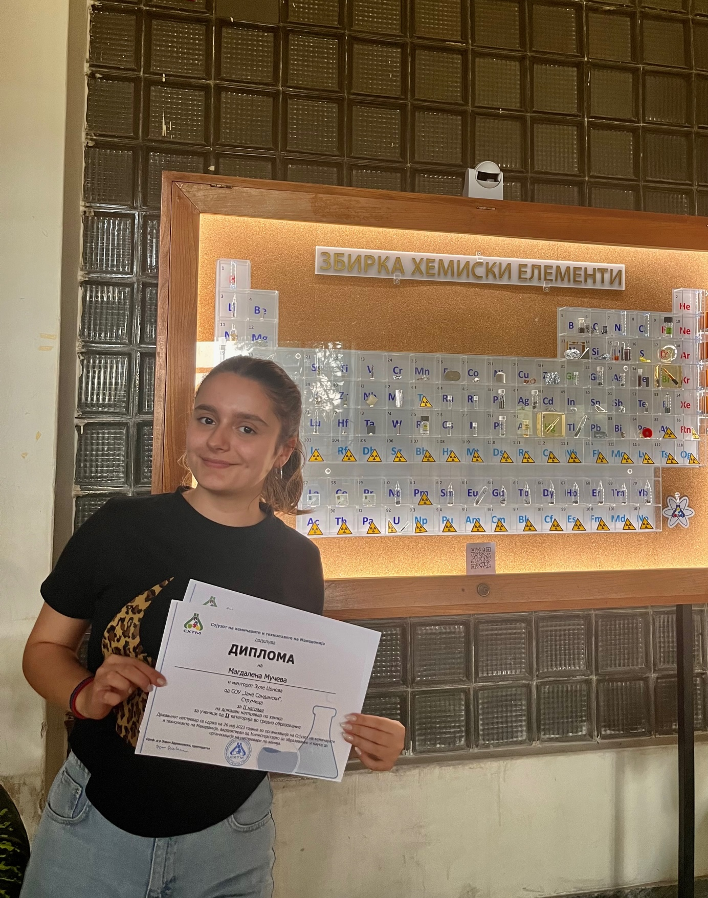
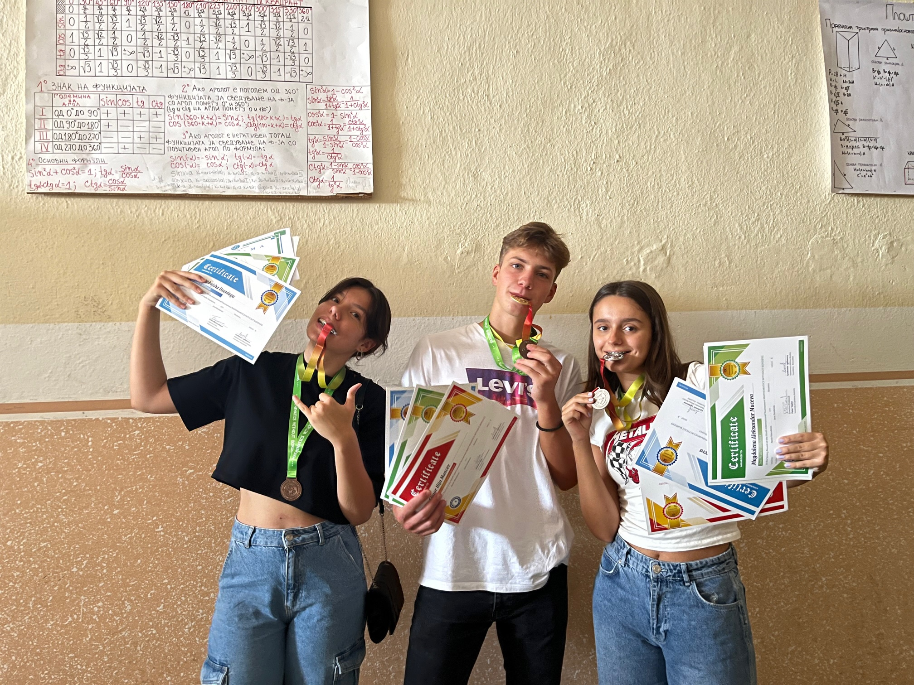
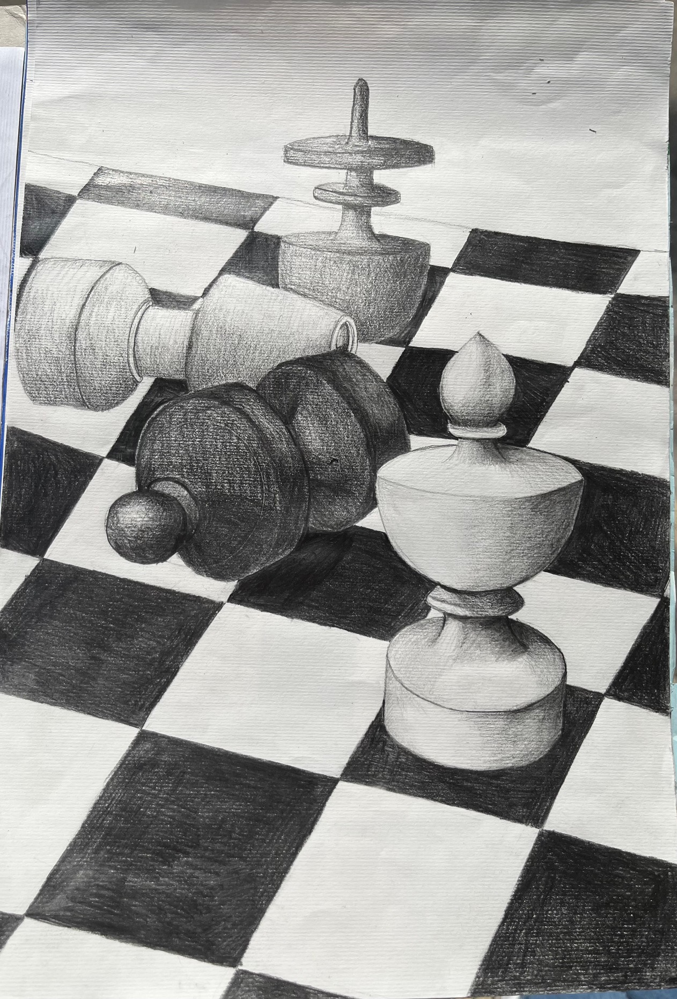
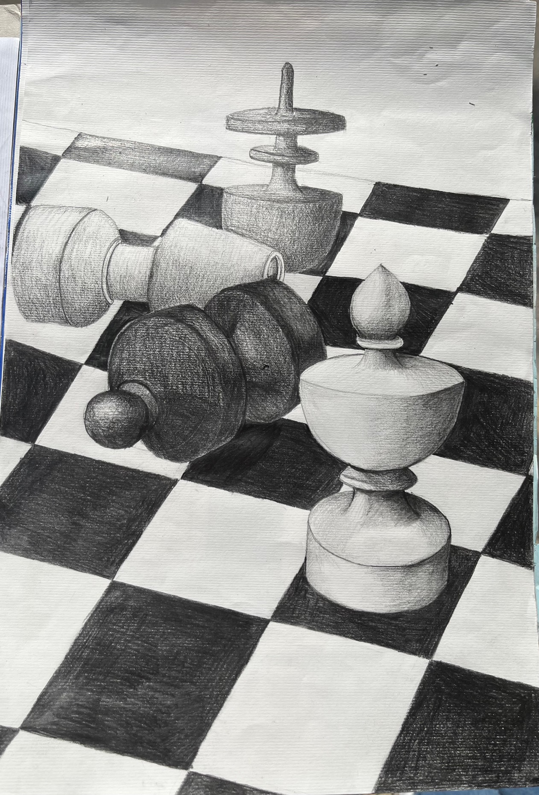

Во текот на моето образование, од прво одделение па се до сега, секогаш сум тежнеела повеќе кон природните науки и тоа математиката, физиката и хемијата. Па затоа уште од 4то одделение почнав на учествувам на натпевари по математика, а во средно училиште почнав и редновно да уествувам на натпревари по физика и хемија. Но покрај овие предмети исто така уште од мала имав афинитет за англиски јазик, а редовно учам и германски јазик. Еве некои од моите досечашни познавања од овие области.
Како мој омилен предмет и оној кој најдолго го учам сметам дека најголеми познавања имам токму од математиката
Со оглед на тоа дека физика и хемија почнав да учам во 8мо одделение и за краток период ми станаа едни од омилените предмети, еве дел од темите кои ги имам изучено од овие области
Имам завршено основно музичко училиште и свирам на клавир, 7 години редовно одев на часови по модерен танц и обожавам да цртам и сликам.

 
